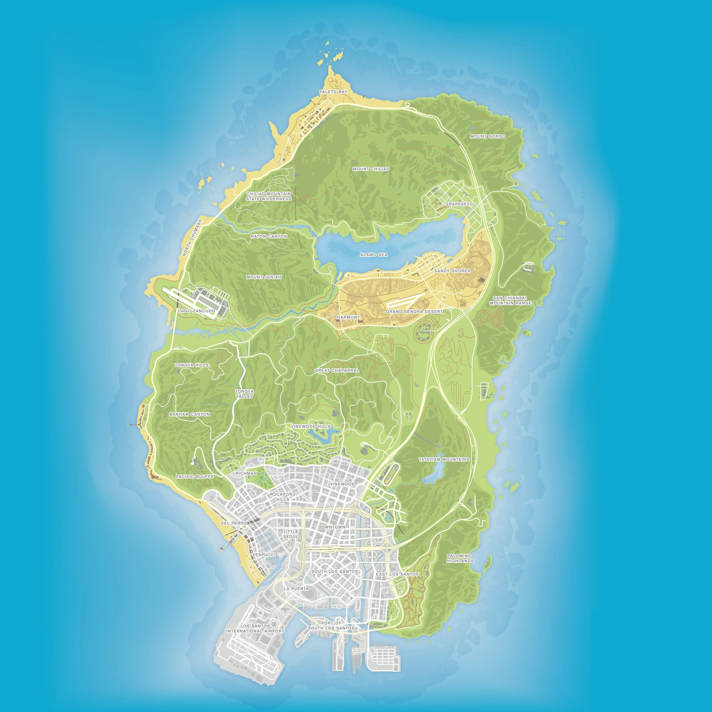

Grand Theft Auto San Andreas
L' État de San Andreas est un État de Grand Theft Auto.
Il est principalement basé sur les États de Californie et du Nevada, avec certaines zones (en particulier les zones désertiques et forestières) basées sur des parties de l'Arizona.
Grand Theft Auto IV
Dans GTA IV, Liberty City est bien plus vaste et beaucoup plus ressemblante à son modèle : New York.
La carte de Liberty City est composé de 3 principales îles et quelques autres plus petites dont Happiness Island qui accueil la célèbre statue de l’hilarité.
Grand Theft Auto V
La carte de GTA 5 prend son inspiration de la Californie du Sud, plus précisément de Los Santos, une réplique de la ville de Los Angeles.
Au-delà de la ville, on retrouve le milieu rural, alias Blaine County, avec ses nombreux villages et ses montagnes à perte de vue.
Carte de Grand Theft Auto San Andreas
Carte de Grand Theft Auto IV

Carte de Grand Theft Auto V
 Source : Grand Theft Auto 5.frPoints communs
Les trois cartes de la célèbre franchise Rockstar Games sont toutes inspirées par des Villes ou États Américain.